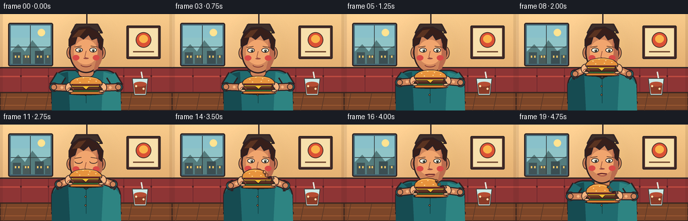
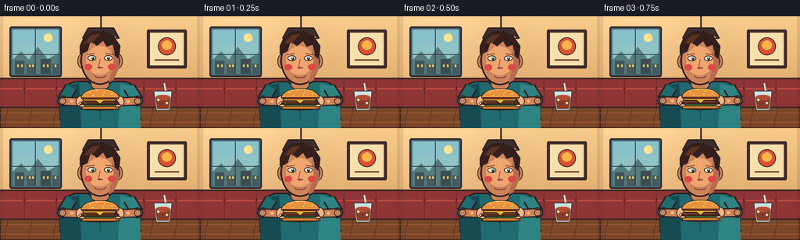

CODING AGENTS AS PIXEL WORLD MODELS
traex/GPT-5.6-Sol · motion_rationality_0001
点击播放 · 原生 RGB 像素
逐轮保存的候选
回放视频、检查图与代码变化。
每份候选均可单独播放。实际图片检查记录在下方工具轨迹中。
候选 01播放与检查图
点击播放 · 原生 RGB 像素


展开代码变化
--- 上一保存版本
+++ 本次保存版本
@@ -0,0 +1,296 @@
+from pathlib import Path
+import json, math
+import numpy as np
+from PIL import Image, ImageDraw, ImageFilter
+import artifact_io
+
+ROOT = Path(__file__).resolve().parent
+SPEC = json.loads((ROOT / 'task_spec.json').read_text())
+W, H = SPEC['width'], SPEC['height']
+N, FPS = SPEC['frames'], SPEC['fps']
+S = 4
+rng = np.random.default_rng(2407)
+
+# Fixed, gentle paper/film texture prevents a sterile flat look without flicker.
+noise = rng.normal(0, 1.25, (H*S, W*S, 1))
+
+def sc(v): return int(round(v*S))
+def pts(seq): return [(sc(x), sc(y)) for x,y in seq]
+def box(b): return tuple(sc(x) for x in b)
+
+def ellipse(d, b, fill, outline=None, width=1):
+ d.ellipse(box(b), fill=fill, outline=outline, width=sc(width) if outline else 1)
+def rect(d, b, fill, outline=None, width=1):
+ d.rectangle(box(b), fill=fill, outline=outline, width=sc(width) if outline else 1)
+def roundrect(d, b, radius, fill, outline=None, width=1):
+ d.rounded_rectangle(box(b), radius=sc(radius), fill=fill, outline=outline,
+ width=sc(width) if outline else 1)
+def poly(d, p, fill, outline=None, width=1):
+ pp=pts(p); d.polygon(pp, fill=fill)
+ if outline: d.line(pp+[pp[0]], fill=outline, width=sc(width), joint='curve')
+def line(d, p, fill, width=1, joint='curve'):
+ d.line(pts(p), fill=fill, width=sc(width), joint=joint)
+def arc(d, b, start, end, fill, width=1):
+ d.arc(box(b), start=start, end=end, fill=fill, width=sc(width))
+
+def rgba_layer(): return Image.new('RGBA', (W*S,H*S), (0,0,0,0))
+
+def make_background():
+ # Warm late-afternoon diner wall gradient.
+ yy, xx = np.mgrid[0:H*S, 0:W*S]
+ t = yy/(H*S-1)
+ arr = np.zeros((H*S,W*S,3), dtype=np.float32)
+ arr[...,0] = 246 - 35*t
+ arr[...,1] = 202 - 48*t
+ arr[...,2] = 139 - 42*t
+ # Window-side glow.
+ glow = np.exp(-((xx-sc(45))**2+(yy-sc(45))**2)/(2*sc(66)**2))[...,None]
+ arr += glow*np.array([10,12,15])
+ arr += noise
+ arr=np.clip(arr,0,255).astype(np.uint8)
+ im=Image.fromarray(arr,'RGB').convert('RGBA'); d=ImageDraw.Draw(im)
+ ink=(52,40,40,255)
+ # Left window and simplified sunlit city.
+ roundrect(d,(12,13,79,78),3,(69,102,116,255),ink,2)
+ rect(d,(16,17,75,74),(143,195,198,255))
+ # sky gradient bands
+ rect(d,(16,17,75,35),(137,192,201,255))
+ ellipse(d,(56,22,67,33),(255,225,145,255))
+ poly(d,[(16,56),(27,45),(37,56),(48,39),(61,55),(75,47),(75,74),(16,74)],(87,125,126,255))
+ rect(d,(19,57,31,74),(66,85,88,255)); rect(d,(34,61,45,74),(75,91,90,255))
+ rect(d,(52,55,65,74),(61,80,84,255)); rect(d,(67,61,75,74),(70,90,92,255))
+ for x in (22,27,37,41,55,60,70): rect(d,(x,62,x+2,65),(238,197,105,210))
+ line(d,[(45,17),(45,74)],(55,61,62,220),1); line(d,[(16,49),(75,49)],(55,61,62,220),1)
+ # Right wall artwork.
+ roundrect(d,(188,17,239,67),2,(76,48,43,255),ink,2)
+ rect(d,(192,21,235,63),(245,222,171,255))
+ ellipse(d,(202,27,225,50),(216,83,55,255),ink,1)
+ ellipse(d,(207,31,220,43),(248,179,76,255))
+ line(d,[(198,56),(229,56)],(116,76,52,255),2)
+ # pendant lamp and cast glow
+ glowlay=rgba_layer(); gd=ImageDraw.Draw(glowlay)
+ ellipse(gd,(92,12,166,87),(255,211,93,18))
+ glowlay=glowlay.filter(ImageFilter.GaussianBlur(sc(10))); im=Image.alpha_composite(im,glowlay); d=ImageDraw.Draw(im)
+ line(d,[(129,0),(129,15)],ink,2)
+ poly(d,[(113,15),(145,15),(152,28),(106,28)],(64,49,46,255),ink,2)
+ ellipse(d,(109,23,149,31),(255,213,113,255),ink,1)
+ # booth back and seam details
+ roundrect(d,(-8,79,264,129),10,(142,55,55,255),ink,2)
+ line(d,[(0,93),(256,93)],(188,76,66,255),2)
+ for x in (31,72,184,225):
+ line(d,[(x,81),(x,119)],(111,44,47,180),1)
+ ellipse(d,(x-1.3,91,x+1.3,94),(79,38,40,190))
+ # table and front edge
+ poly(d,[(0,117),(256,117),(256,144),(0,144)],(125,72,44,255),(62,43,35,255),2)
+ for y in (124,136): line(d,[(0,y),(256,y)],(160,94,53,150),1)
+ for x in range(10,256,31): line(d,[(x,118),(x-5,144)],(92,58,42,85),1)
+ # Plate behind burger.
+ ellipse(d,(91,115,167,132),(70,48,39,80))
+ ellipse(d,(88,113,168,128),(230,226,208,255),(74,68,62,255),1)
+ ellipse(d,(98,116,158,125),(190,194,183,255),(150,149,135,255),1)
+ # Soda glass and straw on right, fixed prop.
+ line(d,[(210,86),(216,119)],(225,237,224,255),2)
+ poly(d,[(197,96),(220,96),(217,121),(200,121)],(205,230,226,190),(61,64,60,255),1)
+ poly(d,[(199,105),(218,105),(216,119),(201,119)],(139,61,42,210))
+ ellipse(d,(199,101,218,108),(180,79,53,230))
+ ellipse(d,(201,106,204,109),(255,225,173,180)); ellipse(d,(212,110,215,113),(255,225,173,160))
+ return im
+
+BG=make_background()
+
+SKIN=(205,132,91,255); SKIN_L=(233,164,112,255); SKIN_H=(244,181,130,255)
+SKIN_D=(149,83,64,255); INK=(48,35,37,255)
+SHIRT=(35,108,112,255); SHIRT_L=(48,132,130,255); SHIRT_D=(25,77,83,255)
+HAIR=(56,34,30,255); HAIR_H=(91,53,36,255)
+
+def ease(a):
+ a=max(0,min(1,a)); return a*a*(3-2*a)
+
+def burger(draw, cx, cy, bitten=False, squash=0.0):
+ # coherent layered hamburger, with a visible bitten corner after contact
+ w=53; h=22-2*squash
+ # floating contact shadow
+ ellipse(draw,(cx-w*.49,cy+8,cx+w*.49,cy+12),(42,28,25,90))
+ # bottom bun
+ roundrect(draw,(cx-24,cy+4,cx+24,cy+11),3,(214,126,50,255),INK,1)
+ line(draw,[(cx-20,cy+7),(cx+20,cy+7)],(239,161,74,255),1)
+ # lettuce frill
+ lettuce=[]
+ for i in range(13):
+ x=cx-24+i*4
+ y=cy+3+(1.7 if i%2 else -1.2)
+ lettuce.append((x,y))
+ lettuce += [(cx+24,cy+7),(cx-24,cy+7)]
+ poly(draw,lettuce,(58,129,55,255),INK,1)
+ # patty, tomato, cheese
+ roundrect(draw,(cx-23,cy-1,cx+23,cy+5),2,(83,45,34,255),INK,1)
+ line(draw,[(cx-19,cy+1),(cx+18,cy+1)],(132,72,43,255),1)
+ poly(draw,[(cx-22,cy-3),(cx+21,cy-3),(cx+19,cy),(cx+4,cy),(cx,cy+4),(cx-5,cy),(cx-21,cy)],(242,184,48,255),INK,1)
+ roundrect(draw,(cx-21,cy-6,cx+21,cy-2),2,(194,55,44,255),INK,1)
+ # top bun silhouette; post-bite has unmistakable scalloped missing right corner.
+ if not bitten:
+ top=[]
+ for k in range(17):
+ a=math.pi + math.pi*k/16
+ top.append((cx+24*math.cos(a),cy-5+11*math.sin(a)))
+ top += [(cx+24,cy-4),(cx-24,cy-4)]
+ else:
+ # Arch follows left/top then steps inward around three bite scallops at upper-right.
+ top=[(cx-24,cy-5),(cx-23,cy-10),(cx-19,cy-14),(cx-13,cy-17),
+ (cx-5,cy-18),(cx+3,cy-17),(cx+8,cy-15),
+ (cx+7,cy-12),(cx+11,cy-10),(cx+10,cy-7),(cx+15,cy-5),
+ (cx+24,cy-4),(cx-24,cy-4)]
+ poly(draw,top,(229,147,63,255),INK,1)
+ # warm bun highlight
+ if not bitten:
+ arc(draw,(cx-19,cy-15,cx+19,cy-5),195,340,(250,190,95,255),1)
+ else:
+ arc(draw,(cx-19,cy-16,cx+7,cy-7),195,330,(250,190,95,255),1)
+ # dark crumb edges make the removed bite readable
+ arc(draw,(cx+4,cy-16,cx+12,cy-9),260,80,(115,67,40,255),1)
+ arc(draw,(cx+7,cy-12,cx+15,cy-5),250,75,(115,67,40,255),1)
+ # sesame seeds
+ seeds=[(-13,-11),(-4,-14),(6,-12),(15,-9),(-9,-7),(4,-8)]
+ for sx,sy in seeds:
+ if bitten and sx>5: continue
+ ellipse(draw,(cx+sx-1,cy+sy-.5,cx+sx+1,cy+sy+.5),(255,225,160,255))
+
+def render(i):
+ im=BG.copy(); d=ImageDraw.Draw(im,'RGBA')
+ # Pose timing: lift, hold/bite, lower, chew.
+ pvals=[.03,.04,.05,.10,.23,.40,.60,.80,.94,1,1,1,1,.95,.80,.61,.44,.31,.24,.20]
+ p=ease(pvals[i])
+ contact = 9 <= i <= 12
+ bitten = i >= 13
+ chew = i >= 13
+ bob = (0.5*math.sin(i*.65)) if i<9 else (0.35*math.sin(i*1.3))
+ bx = 128 + 0.7*math.sin(i*.48)
+ by = 109 + (81-109)*p
+ if i==11: by += 1.3
+ if i==12: by += .5
+ # Person torso / apron-like shirt panel.
+ # seat/body shadow
+ ellipse(d,(76,121,181,143),(40,28,30,90))
+ roundrect(d,(76,83,180,148),24,SHIRT,INK,2)
+ poly(d,[(77,104),(88,89),(101,86),(104,146),(77,146)],SHIRT_D)
+ poly(d,[(179,105),(167,90),(154,86),(151,146),(180,146)],SHIRT_L)
+ # shirt seams/collar
+ poly(d,[(112,84),(128,97),(144,84),(139,80),(117,80)],(25,70,75,255),INK,1)
+ line(d,[(128,97),(128,133)],(21,73,76,190),1)
+ ellipse(d,(125.8,106,128.8,109),(211,177,92,255),INK,1)
+ ellipse(d,(125.8,119,128.8,122),(211,177,92,255),INK,1)
+ # neck behind jaw
+ roundrect(d,(116,71,140,94),7,SKIN,INK,1)
+ poly(d,[(117,74),(139,74),(137,89),(128,94),(118,87)],SKIN)
+ # ears and head, slight bite lean downward
+ head_y = bob + (0.8*p)
+ ellipse(d,(99,48+head_y,111,67+head_y),SKIN,INK,1)
+ ellipse(d,(145,48+head_y,157,67+head_y),SKIN,INK,1)
+ arc(d,(102,52+head_y,109,63+head_y),75,275,SKIN_D,1)
+ arc(d,(147,52+head_y,154,63+head_y),265,105,SKIN_D,1)
+ # face and side shade
+ ellipse(d,(103,25+head_y,153,88+head_y),SKIN,INK,2)
+ poly(d,[(144,34+head_y),(152,45+head_y),(152,67+head_y),(145,82+head_y),(139,85+head_y),
+ (143,69+head_y)],(185,108,80,90))
+ ellipse(d,(110,38+head_y,145,75+head_y),(239,165,111,25))
+ # hair cap and locks
+ top=[(103,48+head_y),(103,38+head_y),(108,27+head_y),(118,20+head_y),
+ (132,19+head_y),(145,26+head_y),(153,38+head_y),(152,48+head_y),
+ (147,43+head_y),(145,35+head_y),(137,38+head_y),(132,30+head_y),
+ (124,37+head_y),(115,31+head_y),(111,44+head_y)]
+ poly(d,top,HAIR,INK,2)
+ poly(d,[(107,35+head_y),(117,24+head_y),(128,22+head_y),(118,34+head_y)],HAIR_H)
+ poly(d,[(147,35+head_y),(153,40+head_y),(151,54+head_y),(147,50+head_y)],HAIR,INK,1)
+ # eyebrows
+ line(d,[(111,49+head_y),(121,47.5+head_y)],HAIR,1)
+ line(d,[(135,47.5+head_y),(145,49+head_y)],HAIR,1)
+ # eyes look toward moving burger; close naturally during bite.
+ if i in (10,11):
+ arc(d,(111,50+head_y,123,57+head_y),5,175,INK,1)
+ arc(d,(133,50+head_y,145,57+head_y),5,175,INK,1)
+ else:
+ eye_y=53.5+head_y
+ ellipse(d,(112,50+head_y,123,57+head_y),(249,240,218,255),INK,1)
+ ellipse(d,(133,50+head_y,144,57+head_y),(249,240,218,255),INK,1)
+ look=min(1.5,max(-1.5,(bx-128)*.25))
+ ellipse(d,(117+look,52+head_y,120.5+look,56+head_y),(47,51,43,255))
+ ellipse(d,(137+look,52+head_y,140.5+look,56+head_y),(47,51,43,255))
+ ellipse(d,(118+look,52.4+head_y,119+look,53.4+head_y),(255,255,245,255))
+ ellipse(d,(138+look,52.4+head_y,139+look,53.4+head_y),(255,255,245,255))
+ # nose
+ line(d,[(128,55+head_y),(126,64+head_y),(130,66+head_y)],SKIN_D,1)
+ ellipse(d,(124,65+head_y,132,67+head_y),(151,78,66,45))
+ # cheeks; increase during chewing
+ ellipse(d,(108,61+head_y,118,69+head_y),(215,76,72,30 if not chew else 45))
+ ellipse(d,(138,61+head_y,148,69+head_y),(215,76,72,30 if not chew else 45))
+ # Mouth changes in anticipation, bite, and chew.
+ mouth_y=74+head_y
+ if i <= 7:
+ arc(d,(120,mouth_y-2,136,mouth_y+5),5,175,(113,48,48,255),1)
+ elif i in (8,9,10):
+ ellipse(d,(121,mouth_y-4,135,mouth_y+5),(91,37,39,255),INK,1)
+ arc(d,(123,mouth_y,133,mouth_y+4),190,350,(230,104,92,255),1)
+ elif i in (11,12):
+ ellipse(d,(120,mouth_y-2,136,mouth_y+4),(87,34,36,255),INK,1)
+ else:
+ # Alternating asymmetric curve conveys visible chewing.
+ off=1.2*math.sin((i-13)*1.9)
+ line(d,[(121,mouth_y),(127,mouth_y+off),(135,mouth_y-.4)],(105,42,45,255),2)
+ arc(d,(122,mouth_y-2,135,mouth_y+3),10,170,(151,64,65,180),1)
+ # Arms follow a plausible two-joint path from fixed shoulders to the food.
+ shoulders=[(91,91),(165,91)]
+ wrists=[(bx-24,by+1),(bx+24,by+1)]
+ elbows=[(80+8*p,109-20*p),(176-8*p,109-20*p)]
+ # upper sleeves
+ for side in (0,1):
+ sh=shoulders[side]; el=elbows[side]
+ line(d,[sh,el],INK,17)
+ line(d,[sh,el],SHIRT_L if side==1 else SHIRT,13)
+ ellipse(d,(el[0]-7,el[1]-7,el[0]+7,el[1]+7),SHIRT_L if side==1 else SHIRT,INK,1)
+ # sleeve hems
+ for el in elbows:
+ ang=0
+ ellipse(d,(el[0]-6.8,el[1]-5.6,el[0]+6.8,el[1]+5.6),SHIRT,INK,1)
+ # forearms + elbow and wrist highlights
+ for side in (0,1):
+ el=elbows[side]; wr=wrists[side]
+ line(d,[el,wr],INK,12)
+ line(d,[el,wr],SKIN,9)
+ ellipse(d,(el[0]-4.5,el[1]-4.5,el[0]+4.5,el[1]+4.5),SKIN,INK,1)
+ # narrow highlight along forearm
+ mx=(el[0]+wr[0])/2; my=(el[1]+wr[1])/2
+ ellipse(d,(mx-2,my-2,mx+2,my+2),SKIN_H)
+ # hands wrap around burger sides; behind food but fingers will overlap.
+ ellipse(d,(bx-31,by-7,bx-17,by+8),SKIN_H,INK,1)
+ ellipse(d,(bx+17,by-7,bx+31,by+8),SKIN_H,INK,1)
+ # thumbs above burger edge
+ ellipse(d,(bx-24,by-7,bx-13,by-1),SKIN_H,INK,1)
+ ellipse(d,(bx+13,by-7,bx+24,by-1),SKIN_H,INK,1)
+ burger(d,bx,by,bitten=bitten,squash=1 if i==11 else 0)
+ # front fingers visibly curl around lower bun.
+ for sx in (-1,1):
+ x=bx+sx*23
+ arc(d,(x-5,by,x+5,by+10),190 if sx<0 else 350,350 if sx<0 else 170,SKIN_D,1)
+ ellipse(d,(x-4,by+4,x+4,by+8),SKIN_H,INK,1)
+ # small crumbs after the bite, falling naturally for two frames.
+ if i in (13,14,15):
+ age=i-13
+ for j,(dx,dy) in enumerate(((15,1),(9,4))):
+ ellipse(d,(bx+dx+j,by-9+dy+age*4,bx+dx+j+2,by-7+dy+age*4),(220,139,59,255),INK,1)
+ # ambient foreground vignette for cinematic depth.
+ vig=rgba_layer(); vd=ImageDraw.Draw(vig)
+ rect(vd,(0,0,4,H),(40,22,25,25)); rect(vd,(252,0,256,H),(40,22,25,25))
+ im=Image.alpha_composite(im,vig)
+ # Downsample gives high quality anti-aliasing, then subtle final contrast.
+ im=im.convert('RGB').resize((W,H),Image.Resampling.LANCZOS)
+ arr=np.asarray(im).astype(np.float32)
+ arr=(arr-128)*1.025+128
+ return np.clip(arr,0,255).astype(np.uint8)
+
+def main():
+ frames=np.stack([render(i) for i in range(N)],axis=0)
+ artifact_io.save(frames, ROOT)
+ print(f'saved {frames.shape}, {frames.dtype}, {N/FPS:.1f}s at {FPS:g} fps')
+
+if __name__=='__main__':
+ main()
可观测工具轨迹
实际执行的命令与返回图片。
命令 1exit 0
/bin/bash -lc "ls -la && printf '\\n--- prompt.txt ---\\n' && cat prompt.txt && printf '\\n--- GENERATION_RULES.md ---\\n' && cat GENERATION_RULES.md && printf '\\n--- task_spec.json ---\\n' && cat task_spec.json"
命令 2exit 0
/bin/bash -lc "find . -maxdepth 2 -type f -printf '%p\\n' | sort"
命令 3exit 0
/bin/bash -lc "which ffmpeg || true; which python3 || true; python3 - <<'PY'
try:
import PIL; print('PIL',PIL.__version__)
except Exception as e: print('no PIL',e)
try:
import cv2; print('cv2',cv2.__version__)
except Exception as e: print('no cv2',e)
try:
import numpy; print('numpy',numpy.__version__)
except Exception as e: print('no numpy',e)
PY"命令 4exit 0
/bin/bash -lc 'cat artifact_io.py'
命令 5exit 0
/bin/bash -lc "cat > generate.py <<'PY'
from pathlib import Path
import json, math
import numpy as np
from PIL import Image, ImageDraw, ImageFilter
import artifact_io
ROOT = Path(__file__).resolve().parent
SPEC = json.loads((ROOT / 'task_spec.json').read_text())
W, H = SPEC['width'], SPEC['height']
N, FPS = SPEC['frames'], SPEC['fps']
S = 4
rng = np.random.default_rng(2407)
# Fixed, gentle paper/film texture prevents a sterile flat look without flicker.
noise = rng.normal(0, 1.25, (H*S, W*S, 1))
def sc(v): return int(round(v*S))
def pts(seq): return [(sc(x), sc(y)) for x,y in seq]
def box(b): return tuple(sc(x) for x in b)
def ellipse(d, b, fill, outline=None, width=1):
d.ellipse(box(b), fill=fill, outline=outline, width=sc(width) if outline else 1)
def rect(d, b, fill, outline=None, width=1):
d.rectangle(box(b), fill=fill, outline=outline, width=sc(width) if outline else 1)
def roundrect(d, b, radius, fill, outline=None, width=1):
d.rounded_rectangle(box(b), radius=sc(radius), fill=fill, outline=outline,
width=sc(width) if outline else 1)
def poly(d, p, fill, outline=None, width=1):
pp=pts(p); d.polygon(pp, fill=fill)
if outline: d.line(pp+[pp[0]], fill=outline, width=sc(width), joint='curve')
def line(d, p, fill, width=1, joint='curve'):
d.line(pts(p), fill=fill, width=sc(width), joint=joint)
def arc(d, b, start, end, fill, width=1):
d.arc(box(b), start=start, end=end, fill=fill, width=sc(width))
def rgba_layer(): return Image.new('RGBA', (W*S,H*S), (0,0,0,0))
def make_background():
# Warm late-afternoon diner wall gradient.
yy, xx = np.mgrid[0:H*S, 0:W*S]
t = yy/(H*S-1)
arr = np.zeros((H*S,W*S,3), dtype=np.float32)
arr[...,0] = 246 - 35*t
arr[...,1] = 202 - 48*t
arr[...,2] = 139 - 42*t
# Window-side glow.
glow = np.exp(-((xx-sc(45))**2+(yy-sc(45))**2)/(2*sc(66)**2))[...,None]
arr += glow*np.array([10,12,15])
arr += noise
arr=np.clip(arr,0,255).astype(np.uint8)
im=Image.fromarray(arr,'RGB').convert('RGBA'); d=ImageDraw.Draw(im)
ink=(52,40,40,255)
# Left window and simplified sunlit city.
roundrect(d,(12,13,79,78),3,(69,102,116,255),ink,2)
rect(d,(16,17,75,74),(143,195,198,255))
# sky gradient bands
rect(d,(16,17,75,35),(137,192,201,255))
ellipse(d,(56,22,67,33),(255,225,145,255))
poly(d,[(16,56),(27,45),(37,56),(48,39),(61,55),(75,47),(75,74),(16,74)],(87,125,126,255))
rect(d,(19,57,31,74),(66,85,88,255)); rect(d,(34,61,45,74),(75,91,90,255))
rect(d,(52,55,65,74),(61,80,84,255)); rect(d,(67,61,75,74),(70,90,92,255))
for x in (22,27,37,41,55,60,70): rect(d,(x,62,x+2,65),(238,197,105,210))
line(d,[(45,17),(45,74)],(55,61,62,220),1); line(d,[(16,49),(75,49)],(55,61,62,220),1)
# Right wall artwork.
roundrect(d,(188,17,239,67),2,(76,48,43,255),ink,2)
rect(d,(192,21,235,63),(245,222,171,255))
ellipse(d,(202,27,225,50),(216,83,55,255),ink,1)
ellipse(d,(207,31,220,43),(248,179,76,255))
line(d,[(198,56),(229,56)],(116,76,52,255),2)
# pendant lamp and cast glow
glowlay=rgba_layer(); gd=ImageDraw.Draw(glowlay)
ellipse(gd,(92,12,166,87),(255,211,93,18))
glowlay=glowlay.filter(ImageFilter.GaussianBlur(sc(10))); im=Image.alpha_composite(im,glowlay); d=ImageDraw.Draw(im)
line(d,[(129,0),(129,15)],ink,2)
poly(d,[(113,15),(145,15),(152,28),(106,28)],(64,49,46,255),ink,2)
ellipse(d,(109,23,149,31),(255,213,113,255),ink,1)
# booth back and seam details
roundrect(d,(-8,79,264,129),10,(142,55,55,255),ink,2)
line(d,[(0,93),(256,93)],(188,76,66,255),2)
for x in (31,72,184,225):
line(d,[(x,81),(x,119)],(111,44,47,180),1)
ellipse(d,(x-1.3,91,x+1.3,94),(79,38,40,190))
# table and front edge
poly(d,[(0,117),(256,117),(256,144),(0,144)],(125,72,44,255),(62,43,35,255),2)
for y in (124,136): line(d,[(0,y),(256,y)],(160,94,53,150),1)
for x in range(10,256,31): line(d,[(x,118),(x-5,144)],(92,58,42,85),1)
# Plate behind burger.
ellipse(d,(91,115,167,132),(70,48,39,80))
ellipse(d,(88,113,168,128),(230,226,208,255),(74,68,62,255),1)
ellipse(d,(98,116,158,125),(190,194,183,255),(150,149,135,255),1)
# Soda glass and straw on right, fixed prop.
line(d,[(210,86),(216,119)],(225,237,224,255),2)
poly(d,[(197,96),(220,96),(217,121),(200,121)],(205,230,226,190),(61,64,60,255),1)
poly(d,[(199,105),(218,105),(216,119),(201,119)],(139,61,42,210))
ellipse(d,(199,101,218,108),(180,79,53,230))
ellipse(d,(201,106,204,109),(255,225,173,180)); ellipse(d,(212,110,215,113),(255,225,173,160))
return im
BG=make_background()
SKIN=(205,132,91,255); SKIN_L=(233,164,112,255); SKIN_H=(244,181,130,255)
SKIN_D=(149,83,64,255); INK=(48,35,37,255)
SHIRT=(35,108,112,255); SHIRT_L=(48,132,130,255); SHIRT_D=(25,77,83,255)
HAIR=(56,34,30,255); HAIR_H=(91,53,36,255)
def ease(a):
a=max(0,min(1,a)); return a*a*(3-2*a)
def burger(draw, cx, cy, bitten=False, squash=0.0):
# coherent layered hamburger, with a visible bitten corner after contact
w=53; h=22-2*squash
# floating contact shadow
ellipse(draw,(cx-w*.49,cy+8,cx+w*.49,cy+12),(42,28,25,90))
# bottom bun
roundrect(draw,(cx-24,cy+4,cx+24,cy+11),3,(214,126,50,255),INK,1)
line(draw,[(cx-20,cy+7),(cx+20,cy+7)],(239,161,74,255),1)
# lettuce frill
lettuce=[]
for i in range(13):
x=cx-24+i*4
y=cy+3+(1.7 if i%2 else -1.2)
lettuce.append((x,y))
lettuce += [(cx+24,cy+7),(cx-24,cy+7)]
poly(draw,lettuce,(58,129,55,255),INK,1)
# patty, tomato, cheese
roundrect(draw,(cx-23,cy-1,cx+23,cy+5),2,(83,45,34,255),INK,1)
line(draw,[(cx-19,cy+1),(cx+18,cy+1)],(132,72,43,255),1)
poly(draw,[(cx-22,cy-3),(cx+21,cy-3),(cx+19,cy),(cx+4,cy),(cx,cy+4),(cx-5,cy),(cx-21,cy)],(242,184,48,255),INK,1)
roundrect(draw,(cx-21,cy-6,cx+21,cy-2),2,(194,55,44,255),INK,1)
# top bun silhouette; post-bite has unmistakable scalloped missing right corner.
if not bitten:
top=[]
for k in range(17):
a=math.pi + math.pi*k/16
top.append((cx+24*math.cos(a),cy-5+11*math.sin(a)))
top += [(cx+24,cy-4),(cx-24,cy-4)]
else:
# Arch follows left/top then steps inward around three bite scallops at upper-right.
top=[(cx-24,cy-5),(cx-23,cy-10),(cx-19,cy-14),(cx-13,cy-17),
(cx-5,cy-18),(cx+3,cy-17),(cx+8,cy-15),
(cx+7,cy-12),(cx+11,cy-10),(cx+10,cy-7),(cx+15,cy-5),
(cx+24,cy-4),(cx-24,cy-4)]
poly(draw,top,(229,147,63,255),INK,1)
# warm bun highlight
if not bitten:
arc(draw,(cx-19,cy-15,cx+19,cy-5),195,340,(250,190,95,255),1)
else:
arc(draw,(cx-19,cy-16,cx+7,cy-7),195,330,(250,190,95,255),1)
# dark crumb edges make the removed bite readable
arc(draw,(cx+4,cy-16,cx+12,cy-9),260,80,(115,67,40,255),1)
arc(draw,(cx+7,cy-12,cx+15,cy-5),250,75,(115,67,40,255),1)
# sesame seeds
seeds=[(-13,-11),(-4,-14),(6,-12),(15,-9),(-9,-7),(4,-8)]
for sx,sy in seeds:
if bitten and sx>5: continue
ellipse(draw,(cx+sx-1,cy+sy-.5,cx+sx+1,cy+sy+.5),(255,225,160,255))
def render(i):
im=BG.copy(); d=ImageDraw.Draw(im,'RGBA')
# Pose timing: lift, hold/bite, lower, chew.
pvals=[.03,.04,.05,.10,.23,.40,.60,.80,.94,1,1,1,1,.95,.80,.61,.44,.31,.24,.20]
p=ease(pvals[i])
contact = 9 <= i <= 12
bitten = i >= 13
chew = i >= 13
bob = (0.5*math.sin(i*.65)) if i<9 else (0.35*math.sin(i*1.3))
bx = 128 + 0.7*math.sin(i*.48)
by = 109 + (81-109)*p
if i==11: by += 1.3
if i==12: by += .5
# Person torso / apron-like shirt panel.
# seat/body shadow
ellipse(d,(76,121,181,143),(40,28,30,90))
roundrect(d,(76,83,180,148),24,SHIRT,INK,2)
poly(d,[(77,104),(88,89),(101,86),(104,146),(77,146)],SHIRT_D)
poly(d,[(179,105),(167,90),(154,86),(151,146),(180,146)],SHIRT_L)
# shirt seams/collar
poly(d,[(112,84),(128,97),(144,84),(139,80),(117,80)],(25,70,75,255),INK,1)
line(d,[(128,97),(128,133)],(21,73,76,190),1)
ellipse(d,(125.8,106,128.8,109),(211,177,92,255),INK,1)
ellipse(d,(125.8,119,128.8,122),(211,177,92,255),INK,1)
# neck behind jaw
roundrect(d,(116,71,140,94),7,SKIN,INK,1)
poly(d,[(117,74),(139,74),(137,89),(128,94),(118,87)],SKIN)
# ears and head, slight bite lean downward
head_y = bob + (0.8*p)
ellipse(d,(99,48+head_y,111,67+head_y),SKIN,INK,1)
ellipse(d,(145,48+head_y,157,67+head_y),SKIN,INK,1)
arc(d,(102,52+head_y,109,63+head_y),75,275,SKIN_D,1)
arc(d,(147,52+head_y,154,63+head_y),265,105,SKIN_D,1)
# face and side shade
ellipse(d,(103,25+head_y,153,88+head_y),SKIN,INK,2)
poly(d,[(144,34+head_y),(152,45+head_y),(152,67+head_y),(145,82+head_y),(139,85+head_y),
(143,69+head_y)],(185,108,80,90))
ellipse(d,(110,38+head_y,145,75+head_y),(239,165,111,25))
# hair cap and locks
top=[(103,48+head_y),(103,38+head_y),(108,27+head_y),(118,20+head_y),
(132,19+head_y),(145,26+head_y),(153,38+head_y),(152,48+head_y),
(147,43+head_y),(145,35+head_y),(137,38+head_y),(132,30+head_y),
(124,37+head_y),(115,31+head_y),(111,44+head_y)]
poly(d,top,HAIR,INK,2)
poly(d,[(107,35+head_y),(117,24+head_y),(128,22+head_y),(118,34+head_y)],HAIR_H)
poly(d,[(147,35+head_y),(153,40+head_y),(151,54+head_y),(147,50+head_y)],HAIR,INK,1)
# eyebrows
line(d,[(111,49+head_y),(121,47.5+head_y)],HAIR,1)
line(d,[(135,47.5+head_y),(145,49+head_y)],HAIR,1)
# eyes look toward moving burger; close naturally during bite.
if i in (10,11):
arc(d,(111,50+head_y,123,57+head_y),5,175,INK,1)
arc(d,(133,50+head_y,145,57+head_y),5,175,INK,1)
else:
eye_y=53.5+head_y
ellipse(d,(112,50+head_y,123,57+head_y),(249,240,218,255),INK,1)
ellipse(d,(133,50+head_y,144,57+head_y),(249,240,218,255),INK,1)
look=min(1.5,max(-1.5,(bx-128)*.25))
ellipse(d,(117+look,52+head_y,120.5+look,56+head_y),(47,51,43,255))
ellipse(d,(137+look,52+head_y,140.5+look,56+head_y),(47,51,43,255))
ellipse(d,(118+look,52.4+head_y,119+look,53.4+head_y),(255,255,245,255))
ellipse(d,(138+look,52.4+head_y,139+look,53.4+head_y),(255,255,245,255))
# nose
line(d,[(128,55+head_y),(126,64+head_y),(130,66+head_y)],SKIN_D,1)
ellipse(d,(124,65+head_y,132,67+head_y),(151,78,66,45))
# cheeks; increase during chewing
ellipse(d,(108,61+head_y,118,69+head_y),(215,76,72,30 if not chew else 45))
ellipse(d,(138,61+head_y,148,69+head_y),(215,76,72,30 if not chew else 45))
# Mouth changes in anticipation, bite, and chew.
mouth_y=74+head_y
if i <= 7:
arc(d,(120,mouth_y-2,136,mouth_y+5),5,175,(113,48,48,255),1)
elif i in (8,9,10):
ellipse(d,(121,mouth_y-4,135,mouth_y+5),(91,37,39,255),INK,1)
arc(d,(123,mouth_y,133,mouth_y+4),190,350,(230,104,92,255),1)
elif i in (11,12):
ellipse(d,(120,mouth_y-2,136,mouth_y+4),(87,34,36,255),INK,1)
else:
# Alternating asymmetric curve conveys visible chewing.
off=1.2*math.sin((i-13)*1.9)
line(d,[(121,mouth_y),(127,mouth_y+off),(135,mouth_y-.4)],(105,42,45,255),2)
arc(d,(122,mouth_y-2,135,mouth_y+3),10,170,(151,64,65,180),1)
# Arms follow a plausible two-joint path from fixed shoulders to the food.
shoulders=[(91,91),(165,91)]
wrists=[(bx-24,by+1),(bx+24,by+1)]
elbows=[(80+8*p,109-20*p),(176-8*p,109-20*p)]
# upper sleeves
for side in (0,1):
sh=shoulders[side]; el=elbows[side]
line(d,[sh,el],INK,17)
line(d,[sh,el],SHIRT_L if side==1 else SHIRT,13)
ellipse(d,(el[0]-7,el[1]-7,el[0]+7,el[1]+7),SHIRT_L if side==1 else SHIRT,INK,1)
# sleeve hems
for el in elbows:
ang=0
ellipse(d,(el[0]-6.8,el[1]-5.6,el[0]+6.8,el[1]+5.6),SHIRT,INK,1)
# forearms + elbow and wrist highlights
for side in (0,1):
el=elbows[side]; wr=wrists[side]
line(d,[el,wr],INK,12)
line(d,[el,wr],SKIN,9)
ellipse(d,(el[0]-4.5,el[1]-4.5,el[0]+4.5,el[1]+4.5),SKIN,INK,1)
# narrow highlight along forearm
mx=(el[0]+wr[0])/2; my=(el[1]+wr[1])/2
ellipse(d,(mx-2,my-2,mx+2,my+2),SKIN_H)
# hands wrap around burger sides; behind food but fingers will overlap.
ellipse(d,(bx-31,by-7,bx-17,by+8),SKIN_H,INK,1)
ellipse(d,(bx+17,by-7,bx+31,by+8),SKIN_H,INK,1)
# thumbs above burger edge
ellipse(d,(bx-24,by-7,bx-13,by-1),SKIN_H,INK,1)
ellipse(d,(bx+13,by-7,bx+24,by-1),SKIN_H,INK,1)
burger(d,bx,by,bitten=bitten,squash=1 if i==11 else 0)
# front fingers visibly curl around lower bun.
for sx in (-1,1):
x=bx+sx*23
arc(d,(x-5,by,x+5,by+10),190 if sx<0 else 350,350 if sx<0 else 170,SKIN_D,1)
ellipse(d,(x-4,by+4,x+4,by+8),SKIN_H,INK,1)
# small crumbs after the bite, falling naturally for two frames.
if i in (13,14,15):
age=i-13
for j,(dx,dy) in enumerate(((15,1),(9,4))):
ellipse(d,(bx+dx+j,by-9+dy+age*4,bx+dx+j+2,by-7+dy+age*4),(220,139,59,255),INK,1)
# ambient foreground vignette for cinematic depth.
vig=rgba_layer(); vd=ImageDraw.Draw(vig)
rect(vd,(0,0,4,H),(40,22,25,25)); rect(vd,(252,0,256,H),(40,22,25,25))
im=Image.alpha_composite(im,vig)
# Downsample gives high quality anti-aliasing, then subtle final contrast.
im=im.convert('RGB').resize((W,H),Image.Resampling.LANCZOS)
arr=np.asarray(im).astype(np.float32)
arr=(arr-128)*1.025+128
return np.clip(arr,0,255).astype(np.uint8)
def main():
frames=np.stack([render(i) for i in range(N)],axis=0)
artifact_io.save(frames, ROOT)
print(f'saved {frames.shape}, {frames.dtype}, {N/FPS:.1f}s at {FPS:g} fps')
if __name__=='__main__':
main()
PY
python3 generate.py
ls -lh pixels.npz inspection.png transition_check.png index.html frames/00.png frames/19.png"命令 6exit 0
/bin/bash -lc "python3 - <<'PY'
import numpy as np, json
from PIL import Image
p=np.load('pixels.npz')['pixels']
print('packed:',p.shape,p.dtype)
a=[]
for i in range(20): a.append(np.asarray(Image.open(f'frames/{i:02d}.png')))
a=np.stack(a)
print('frames:',a.shape,a.dtype,'range',a.min(),a.max())
print('adjacent mean abs RGB deltas:',[round(float(np.abs(a[i].astype(int)-a[i-1]).mean()),2) for i in range(1,20)])
print('all unique:',len({x.tobytes() for x in a})==20)
assert a.shape==(20,144,256,3) and a.dtype==np.uint8
assert p.shape==(144,256,20)
assert all(Image.open(f'frames/{i:02d}.png').mode=='RGB' for i in range(20))
print('validation OK')
PY"保存候选 1 份；完成命令 6 次；可验证图片返回 0 张。原始 API 响应与完整日志保留在本地。